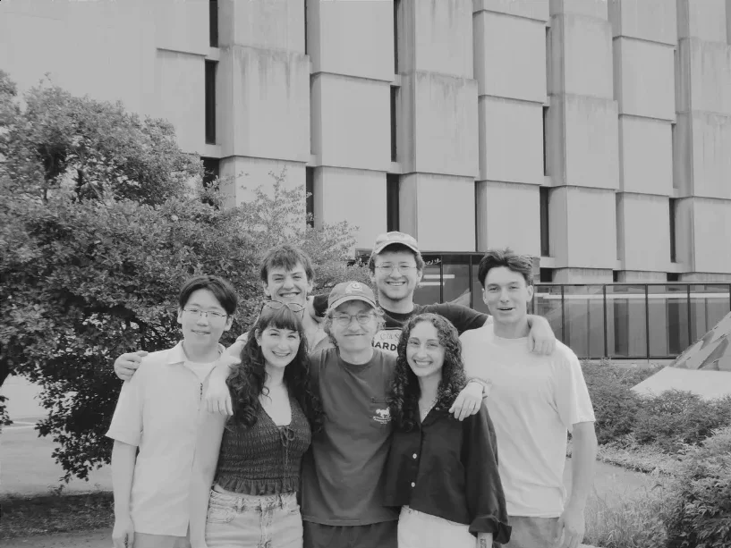
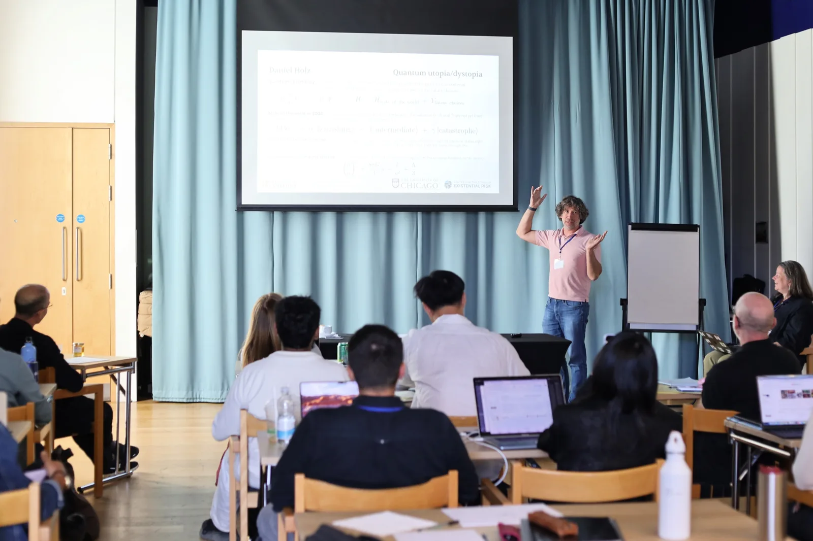
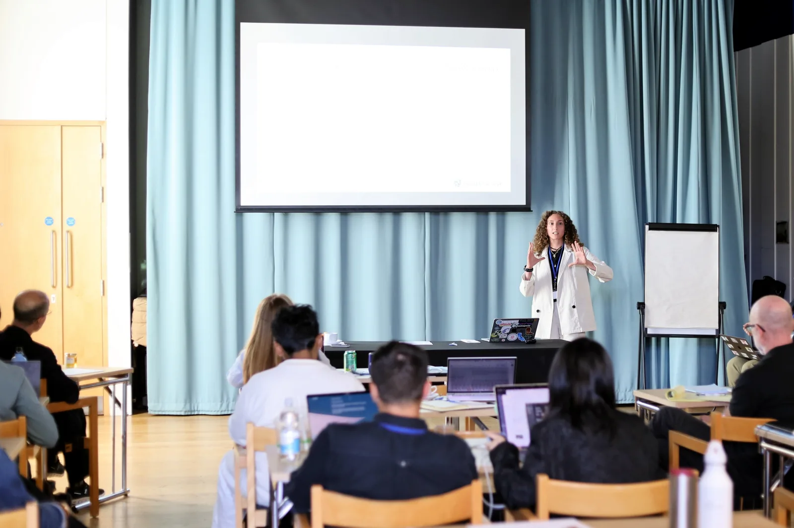
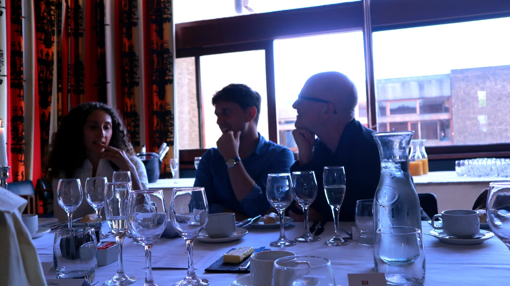

Nuclear
About
XLab’s nuclear risk research program is motivated by the conceptual gap between the canonical nuclear policy field and the resilience and post-detonation sub-field.
While these areas are often treated as separate and distinct entities, XLab’s program treats these research areas as interdependent, cultivating a robust university community focused on producing actionable policy-relevant research that fills in critical knowledge gaps in our understanding of nuclear preparedness, nuclear winter, and the post-nuclear first strike deterrence environment. Our program functions as a complement to the prevention-based risk reduction frameworks that dominate the field, providing possible solutions to mitigating nuclear risk when preventative frameworks face increased opposition and roadblocks in a tri-polar security environment. XLab’s nuclear risk research focuses on three key areas.
Learn more about the current state of nuclear risk →
Our Research Focus
Risk Reduction Alternatives
Much of the risk fatigue and funding decreases in the nuclear risk field may be attributed to no return on investment, as despite research, policy initiatives, and calls for reducing nuclear risk, the risk is evolving and continues to rise. Much of the field focuses on prevention but applies Cold War-era approaches for risk reduction to a modern security climate that looks very different, particularly concerning tri-polar competition. We are motivated to understand where current approaches fall flat in modern conditions, and develop alternatives that can work despite a more hostile security environment. This includes revisiting Cold War-era strategies like minimum viable deterrence, and testing them on modern geopolitical conditions.
Updating the Field’s Foundational Inputs
The security environment has evolved drastically since the Cold War, yet the nuclear field often treats today’s landscape as the same. The nuclear field often confuses the ‘politically irrelevant’ with the ‘scientifically resolved.’ When certain questions fall out of political relevance, the field often stops investigating them; it includes public risk narratives, decision-making, and military planning; hard sciences (e.g., effects of nuclear war and nuclear winter). This research area re-interrogates those inputs under modern conditions to identify where real uncertainty lies and where future work is most needed. Our 2026 report on assumptions and uncertainties in nuclear winter modeling, for example, audits the choices embedded at each stage of the nuclear winter mechanism chain, from fuel loading and firestorm behavior, to soot injection and global circulation. It also shows which of them carry the most weight in the field’s estimates. We also build open-source, interactive tools that make these inputs visible and testable.
Right-of-Boom and Resilience
This research area seeks to broaden the definition of what constitutes risk reduction and what may happen if prevention one day fails. While civil defense and other post-detonation interventions were seen as morally suspect and fatalistic during the Cold War, we argue this area of inquiry should be reframed as risk management for a new nuclear era. The refusal to understand and prepare for possible failure modes increases the probability and severity of a failure event itself. This includes nuclear winter research, institutional resilience, and more broadly, what a post first-strike world looks like.
Research and Working Groups
XLab’s research working group program allows students to pursue impactful research over quarter-long project cycles advised by XLab staff. We provide otherwise rare opportunities for students to engage with topics in nuclear risk, familiarize themselves with the research process, and develop critical analysis skills over the course of the project. Each working group produces a journal article-length deliverable. Most research groups run on a quarterly basis, while others are longer-term initiatives. Below are our current research groups for Fall 2026:
If you are interested in joining or leading a working group, please feel free to email Madeline Berzak or Bennett Cullison with your resume and core research interests.

Research and Activities
- Madeline Berzak, Bennett Cullison, Nicolas Park, and Yohana Eshetu, “A Report on Assumptions and Uncertainties in Modeling Nuclear Winter” EarthArXiv (pre-print), 2026.
- Madeline Berzak, Noah Peters, Noah Burdick, and Ada Meltzer, “With More Than Shovels: A Study on the Risk-Benefit Paradox of Nuclear Civil Defense” XLab report, Summer 2026. Presented at CCCR 2026 at the University of Cambridge.
- Noah Peters, “A Formal Framework for Measuring Institutional Collapse under a Nuclear Winter Scenario” Summer Research Fellowship, 2026.
- Talia Wilcox, “Not All Nukes Are Created Equal: Theater Nuclear Forces and Perceptions of Escalation” Summer Research Fellowship, 2026.
- Carl Parkin, “Saddling the Tiger: Trends and Critical Mechanisms in Nuclear Weapons Acquisition” Summer Research Fellowship, 2026.
What We’ve Been Up to Lately
Patrick Park wins APS Essay Contest
Patrick Park’s XLab summer research fellowship project, “Priority X: Physicists, Petroleum, Secrets in Making Graphite for Chicago Pile 1,” won the American Physical Society’s 2026 History of Physics Essay Contest. Park is currently a fifth-year PhD student at Princeton University studying mechanical engineering, and will present his essay at APS’s upcoming meeting.

XLab at CCCR 2026
XLab’s director of nuclear risk, Madeline Berzak, spoke on a panel focused on current issues in nuclear risk at the Cambridge Centre for the Study of Existential Risk’s (CSER) bi-annual CCCR conference. Berzak spoke alongside CSER director S.M. Amadae, James Acton, and Mette Eilstrup-Sangiovanni.
Madeline Berzak in The Intercept
Madeline Berzak recently spoke to Sam Biddle at The Intercept about how nuclear risk is communicated, and why no one seemed to pay attention to the recent Middle East Chinese-flagged ship AI incident.
XLab at Sandia-Dartmouth Bootcamp
In late July, Madeline Berzak participated in the 6th annual Strategic Force Analysis Bootcamp at Sandia National Labs in Albuquerque, New Mexico. The bootcamp is run by Daryl Press (Dartmouth) and Keir Lieber (Georgetown).

A Week with Yuval Noah Harari
In June 2026, Daniel Holz and Madeline Berzak joined CSER and 25 other academics and professionals for a week-long summer program with Yuval Noah Harari (author of Sapiens and Homo Deus) focused on AI, historical dimensions of power, and societal transformation. It was the perfect week in Cambridge!
People
Madeline Berzak
Directs the nuclear risk research program at XLab. Madeline holds a bachelor’s in political science and public policy from American University, and a master’s in nonproliferation and terrorism studies from the Middlebury Institute of International Studies at Monterey. She was formerly an open source intelligence analyst at the James Martin Center for Nonproliferation Studies, focusing on North Korea’s nuclear weapons program, and has worked for the Nuclear Threat Initiative and Physicians for Social Responsibility. Madeline also runs Appetites for Risk, a Substack on the relationship between big risks and culture.
Rhea Kanuparthi
Manages the emerging technology research program at XLab. Rhea is a fourth-year at the University of Chicago studying political science and mathematics, and leads technical research projects with XLab’s partner organization, the Wisconsin AI Safety Initiative (WAISI). Her research focuses on the impacts of emerging technology on nuclear strategy, deterrence with mutually assured AI malfunction (MAIM), and shifts in crisis dynamics in South Asia. She has worked with XLab since January 2024, and was a summer research fellow in 2024.
Noah Peters
A research assistant for the nuclear risk program at XLab. Noah is an incoming third-year studying mathematics and economics with a concentration in data science. He worked on the Winter 2026 civil defense project, examining the relationship between civil defense and the probability of nuclear war; his broader interests include political and economic resilience, disaster response, post-nuclear war autarky, and export control regimes.
Bennett Cullison
A researcher and lead on the nuclear winter geoengineering project. Bennett is an incoming fourth-year studying geophysical sciences, with research interests in climate and atmospheric modeling, nuclear winter, and GIS applications. He previously worked on XLab’s nuclear winter research, modeling combustible material by land type to produce more accurate soot estimates.
XLab's Approach
HIGH-LEVEL CONVENING
XLab organized the Nobel Laureate Assembly to Prevent Nuclear War, bringing together the world's foremost experts on nuclear weapons and resulting in a Declaration signed by 129 Nobel Laureates.
POLICY RESEARCH
Fellow-led research on escalation dynamics, arms control, and the intersection of emerging technology (including AI) with nuclear command and control.
PUBLIC PROGRAMMING
Panels and screenings held with partners including the Bulletin of the Atomic Scientists, most recently on the annual Doomsday Clock announcement and a screening of Kathryn Bigelow's A House of Dynamite.
Learn More
Want to work on this?
Our Summer Research Fellowship trains junior researchers in nuclear security and policy.
EXPLORE THE FELLOWSHIP →